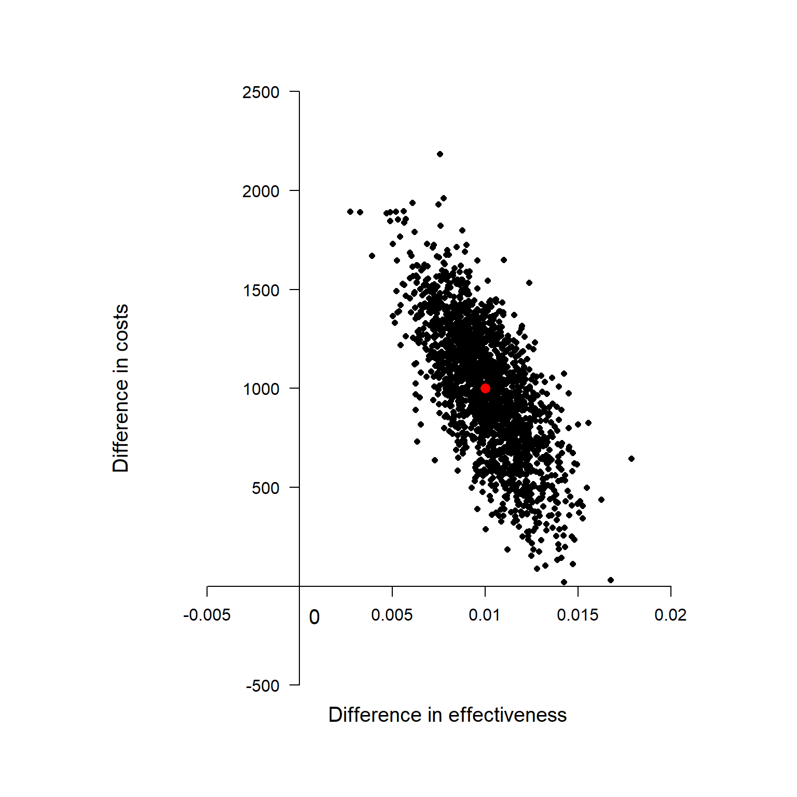

Hello dear readers!
I have finally come back from my lethargy with a new exciting posts about why the job of health economists, although inevitably involving some statistics, can be very different from what standard statisticians typically do. To make this point, I will abuse and give my own opinion of the notorious (and now quite old) paper published by Dr. Claxton (Claxton (1999)).
Before starting my discussion I would like to point out a very nice post made by Sam Watson on the Academic Health Economists’ Blog, who nicely provided his own opinion on the matter and discussed the pros and cons of the paper. I really recommend people interested in knowing more about health economics to check out this blog which is one of the most popular in the field and which has contributions from many many health economists on different topics.
In this post, in contrast to what Sam did in his own, I will not focus on the technical details about the health economics decision-making problem of minimising the expected loss / maximising the utility function in terms of societal preferences (i.e. social welfare in terms of effectiveness and costs). Instead, here I would like to address the much simpler and basic question why health economists do not use statistical significance in their analyses?. In my own experience, especially in trial-based analyses, I had to work closely with both health economists and statisticians who often are unaware of what the other “people” are doing. Since cost-effectiveness analyses have become more and more important over the last decade, I believe it is imperative that even statisticians should learn at least the basics of what their colleagues are doing and most importantly why. Of course, the same applies for health economists who should know a bit of statistics in order to do their job. However, in general, I have the feeling statisticians are reluctant to care about health economics, perhaps due to different statistical methodology required for these analyses compared with standard methods used for the analysis of clinical outcomes.
Apologies for the very long premise. So, let’s start with the most basic question of all. what is the objective of health economics ? To inform decision-makers about the cost-effectiveness of a given treatment with respect to alternatives. Unlike the standard clinical analysis which focuses merely on detecting whether there is a “clinically relevant” difference between treatments in terms of some pre-defined outcome measure, the health economic analysis does not qualify as a mere yes/no problem due to the existence of opportunity costs. These are the losses, either in terms of forgone benefits or extra costs, that the society/health care provider would incur by funding a treatment which is not cost-effective compared to others. Precisely, the decision-making nature of the problem comes from the fact that only a limited amount of resources are available to decision-makers, who need to define some sort of rule to prioritise the distribution of the funds across a pool of possible treatments. Thus, if the objective is to maximise the health benefits for a given budget, then treatments should be selected based on a target quantity, which summarises effectiveness, costs and the preferences of decision-makers, while also taking into account the uncertainty about our conclusions. This quantity takes the name of incremental net benefit and is given by
\[ INB = K\Delta_e - \Delta_c,\]
where \(\Delta_e\) and \(\Delta_c\) are the mean differences between two competing interventions in terms of some effectiveness and cost measures, while \(K\) is the acceptance threshold representing the budget the decision-maker is willing to spend to obtain an increment of one unit of effectiveness (cost per unit of effectiveness gained). If we were to evaluate an hypothesis test about cost-effectiveness of treatment 2 vs treatment 1, we would then test: \(INB\leq 0\) (\(H_0\)) vs \(INB > 0\) (\(H_1\)).
A natural test statistic for this hypothesis is:
\[ t = \frac{\sqrt{n}Kd_e-d_c}{\sqrt{K^2 s^2_e -2Ks_{ce}+s^2_c}}, \]
where \(d_e\) and \(d_c\) are the in-sample estimates of the corresponding population values, while \(s\) are the sample standard deviations. Under the null, this test statistic has a t-student distribution with \(n-1\) degrees of freedom. However, we can see how not rejecting the null hypothesis when a new treatment has a positive but statistically insignificant mean incremental net benefit imposes unnecessary costs which can be valued in either monetary or effectiveness terms. Decisions should be based only on the mean irrespective of whether any differences in this quantity are regarded as statistically significant. This is because one of the mutually exclusive alternatives must be chosen and this decision cannot be deferred. The opportunity costs of failing to make the correct decision based on a single test statistic are symmetrical while the definition of which of the alternatives is regarded as current practice is completely irrelevant.
Although the ordinary rules of statistical analyses do not apply, we still need to summarise the uncertainty associated with our results based on the mean INB given that decision-making problems must take into account and quantify the impact that sampling uncertainty has on our conclusions. This is typically achieved through the use of re-sampling methods, such as bootstrapping, (frequentist approach) or Bayesian methods. The two approaches are very different from a theoretical perspective but I will not address this point to save me of few weeks of time. Here, I am most interested in what type of results we will obtain once applied these methods. Well, typically we will look at something like this:

This is known as Cost-effectiveness Plane and is a graphical representation of the re-sampled (frequentist) or posterior (Bayesian) distribution of the mean effectiveness and cost differentials. The red dot at the centre of the distribution is associated with the population estimates of \(\Delta_e\) and \(\Delta_c\) while all the other black dots are used to quantify the uncertainty around our average estimate. I will no go into details of how these can be derived, but I will limit myself to provide the interpretation to this plot. Given the value of the acceptance threshold \(K\) (assumed to depend on the preferences of the decision-makers), we can compare its value with those associated to each of the dots in the plot. Next, we follow the intuitive rule which defines the probability that treatment 2 is cost-effective compared to treatment 1 as:
\[\frac{\sum_{j=1}^JI[\hat{INB}_j>0]}{J},\]
where \(\hat{INB}_j\) is the estimate of the INB based on the \(j-\)th re-sampled (frequentist) or posterior (Bayesian) sample, and \(I[\hat{INB}_j]\) is an indicator function which takes value 1 if the \(j-\)th estimate is positive and 0 otherwise. Essentially, we compute the probability of cost-effectiveness as the proportion of estimates of INB which are > 0 with respect to the total number of estimates avaiable (\(J\)). This can be also expressed as
\[ P(T_{n-1} < \frac{\sqrt{n}Kd_e-d_c}{\sqrt{K^2 s^2_e -2Ks_{ce}+s^2_c}}),\]
where \(T_{n-1}\) is the standard t-student distribution with \(n-1\) degrees of freedom. Finally, given that uncertainty with respect to the value of \(K\) should also be taken into account, we will need to compute this probability for a range of values of \(K\), often based on some guidelines of the decision-makers. A very nice summary of these results is given by the following plot, known as the Cost-Effectiveness Acceptability Curve.
The graph shows the estimated probability of cost-effectiveness for a range of values of the acceptance threshold. Indeed, by varying \(K\) the proportion of estimated \(INB\) which are positive will change and will provide a summary of how our cost-effectiveness probability changes as we increase/decrease the “willingness to pay” of the decision-makers.
If we wanted to test the null hypothesis based on the INB test-statistic (which, as I tried to show before, we should not!), we would find that the equation for the probability shown before corresponds to \(1\) - the classical frequentist pvalue for this test. However, this interpretation is only possible when:
We have equal sample sizes for the 2 treatments.
We have the willingness to compute variance estimates by matched pairs.
In all other cases, frequentist hypothesis testing will not have a Bayesian justification, and in any event the multiple testing implied by drawing a plot of (1 – p) is hard to justify within the frequentist statistical framework.
Outputs such as the CE plane and the CEAC are what really matter to health economists, whose job is merely to provide decision-makers with this evidence for each treatment comparison under consideration for a given funding decision. Based on the estimated probability of cost-effectiveness and their preferences in terms of budget allocation, decision-makers will prioritise the allocation of resources towards certain treatments, therefore negleting those funds to other treatments. An alternative and always available option could be to retain the funds and do not allocate resources to any treatment under consideration. In this scenario, the implicit element is that decision-makers are willing to postpone the decision to the future, waiting for more evidence to be collected to reduce the risk of making an inefficient/incorrect decision based on the current evidence.
Claxton, Karl. 1999. “The Irrelevance of Inference: A Decision-Making Approach to the Stochastic Evaluation of Health Care Technologies.” Journal of Health Economics 18 (3): 341–64.